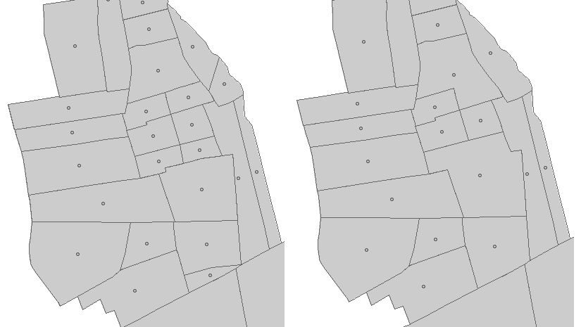
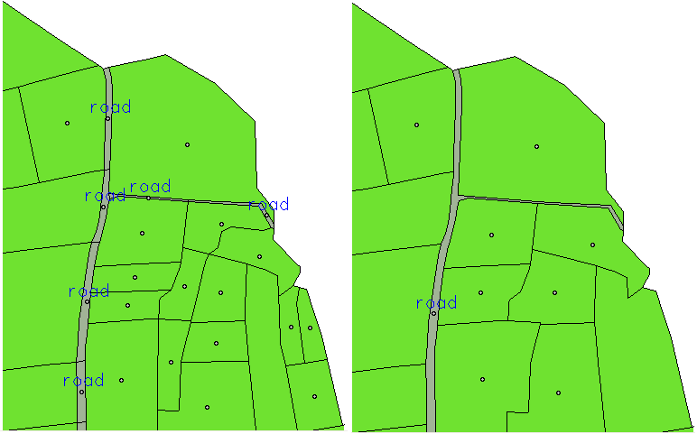

GRASS 6.3.0 :~ > m.dispolyg -i input=polygon1 output=polygon2 area=1200 unit=me You choose a minimum area of 1200 m2 For the vector polygon1, the dissolving small area entities operation will work on 6 polygons for 28 total polygons and will represent 4.3 % of the total surface
GRASS 6.3.0 :~ > m.dispolyg input=polygon1 output=polygon2 area=1200 unit=me
|  |
| Input polygon1 layer (left) ; Output polygon2 layer (right) |
GRASS 6.3.0 :~ > m.dispolyg input=plot1 output=plot2 area=100 unit=me columnp=type valuep=road
|  |
| Input plot1 layer (left) ; Output plot2 layer (right) |
rabotin@supagro.inra.fr
Last Changed: 21 July 2010
Copyright UMR LISAH OpenFluid